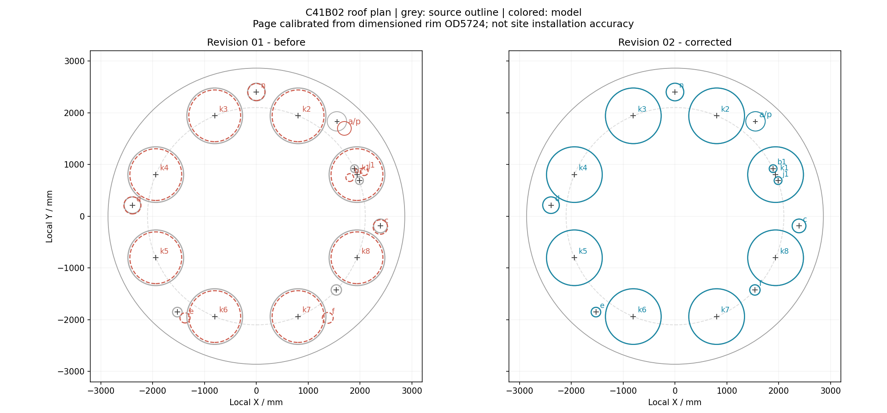
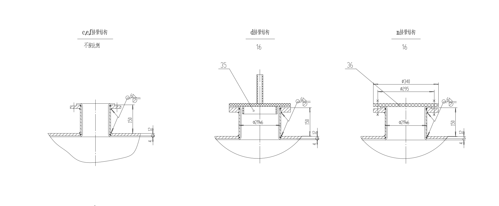
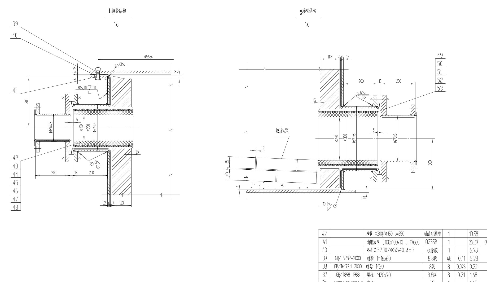
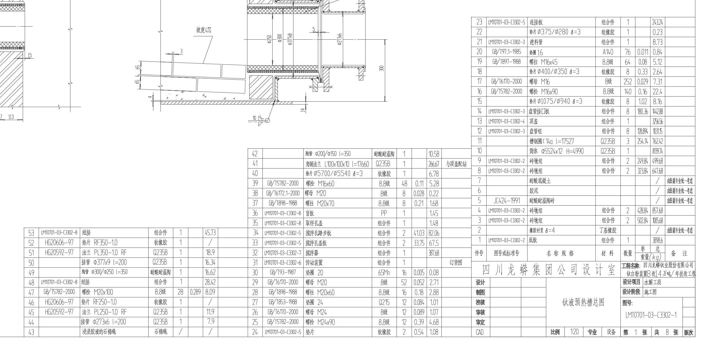
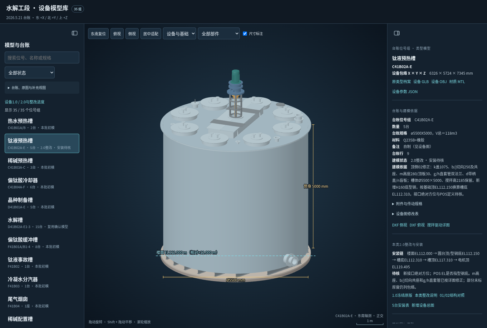
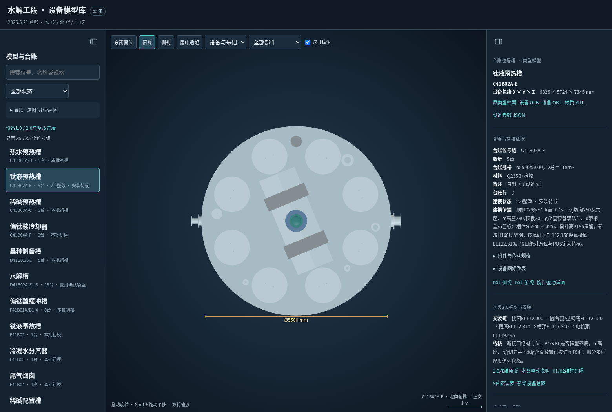

C41B02A—E · 顶侧结构修正02
当前模型与基础 · 01/02并排对照 · 设备1.0冻结原版 · 5台安装对照CSV
C41B02A—E · 顶部与侧面二次修正 · 2.0-C41B02-02
依据：新增《钛液预热槽总图》LMT0701-03-C3302-1的俯视、主视、g/h/c/d/e/f/n局部结构与明细表。原图、完整设备1.0及上一工作版01均保留。
本次基础、底部型钢、槽体与5台安装变换保持。槽体外径5500mm、直筒高5000mm、搅拌器高出槽体顶2185mm不变；电机、联轴器、中间轴和内部轴/叶轮沿用确认总成。支架下段改为图示圆筒开窗轮廓，φ600底座、φ490架体与新m高座衔接；传动装置-6详图尚未提供，不从总图示意轮廓直接改写已确认的驱动尺寸。
本次修正：
1. m安装座：由贴盖的40mm薄框改为280mm高座、30mm顶板及对开盖板，开口2900×1020mm；顶板外轮廓约3064×1150mm按校准俯视量测。补两处400mm踏步板轮廓，厚度/准确安装层位仍是外观表达。
2. k安装口：8个中心在φ4200圆周，22.5°起每45°一处。盖板/垫片外径按明细表φ1075，垫片φ1075/φ940、厚3mm，补中央共座法兰、φ400/φ350垫片和双孔盖板。
3. b/j：两管沿切向排列、中心距250mm；原版误用了径向300mm。两管通过共盖板，按管口表外伸150mm，主视中的177mm相对高差单列核对。
4. 小口位置：用图上φ5724外圈校准转曲图，再从闭合圆轮廓提取。a/p约49.74°，e约230.57°；f在φ4200圆周、约317.23°，没有再统一套用φ4800。其余小口也逐孔对照。
5. a/p：拆成同轴套管与插入管，上下法兰分别表现；c/e/f保持开口接管；d补带竖柄取样盖；n按局部图改为φ340盲板、φ295螺栓圆。
6. g/h侧口：取消锥形管，改为同轴大端直套管、连接法兰/垫片、外端直短接和端法兰。g大端φ377、h大端φ273，h外端φ159；详图外伸链为200+13+200mm。管口表400mm保留为名义伸出记录，413mm详图链与连接面定义不混用。口内保留空腔，未展开隐藏衬里。
基础保持：φ5700×150mm、其中50mm二次浇筑；基础文件与01版逐字节比较。底部型钢27个网格对象与01版一致。
现有安装解释保持：基础顶/型钢底EL112.150，槽底EL112.310，槽顶EL117.310，电机顶EL119.495。X/Y、旋转和镜像未改变；POS定义与新接口工艺绝对方位仍待核，没有将本次相对几何校核当作现场安装确认。
依据强度：明示尺寸（280/30、1075/940、400/350、340/295、200/13/200等）按图取值；孔中心/未标法兰外廓按校准图面量测；局部板厚、踏步板安装细部及缺失零件详图继续标示意。孔位对图校核的数值仅表示模型吻合本张图，不是图纸或施工公差。
对比资料：顶侧结构图面量测.json、顶侧结构独立校验.json、顶侧二次修正对比.json、孔位偏差对比.json；可在修订对比.html中并排旋转查看01/02及g/h局部。旧01版的参数、模型、图和脚本冻结在历史/2.0-C41B02-01。
| 位号 | X mm | Y mm | 旋转° | Y镜像 | 型钢底EL | 槽底EL |
|---|
| C41B02A | 9500.0 | 17999.5866 | 180.0 | 否 | 112.150 | 112.310 |
| C41B02B | 9500.0 | 46799.9867 | 0.0 | 是 | 112.150 | 112.310 |
| C41B02C | 9500.0 | 61200.4134 | 0.0 | 否 | 112.150 | 112.310 |
| C41B02D | 35000.0 | 17999.9866 | 0.0 | 是 | 112.150 | 112.310 |
| C41B02E | 35000.0 | 32400.4134 | 0.0 | 否 | 112.150 | 112.310 |
独立对图校验 · 当前参数 · 来源与差异
孔位新旧对图

b/j与侧口结构

小口局部结构

g/h侧口局部结构

明细表

本次模型与保留的基础

本次顶部
